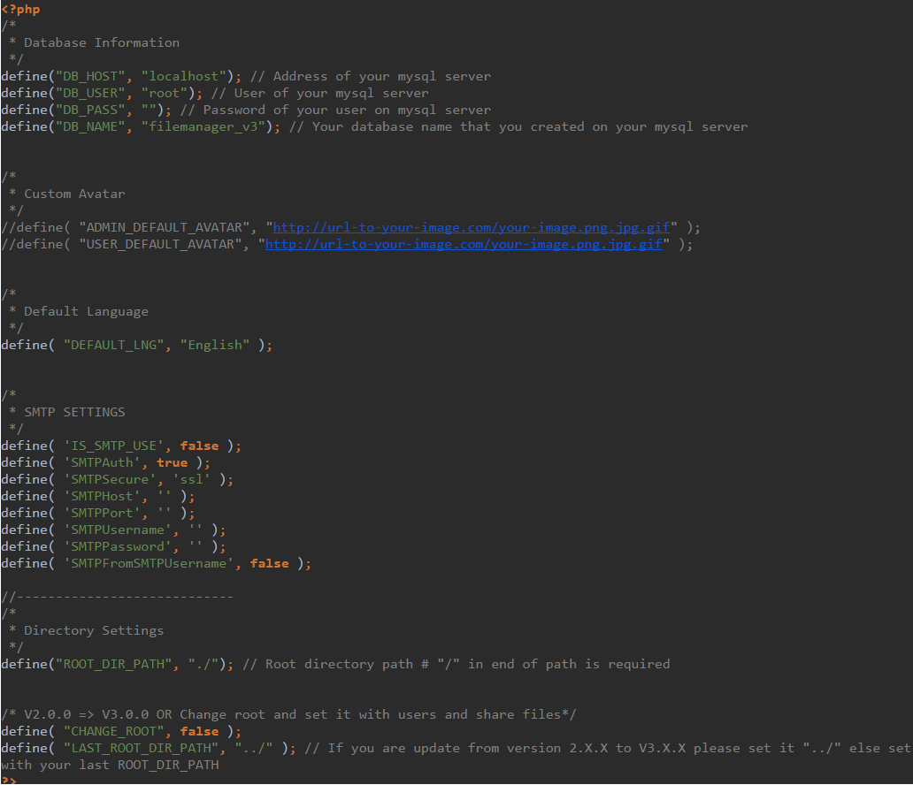
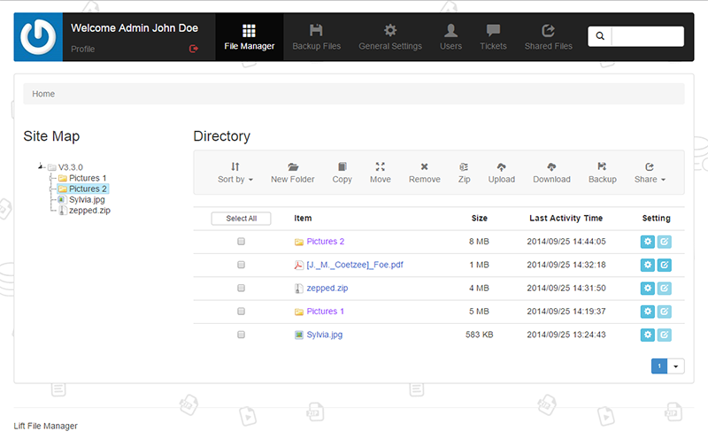
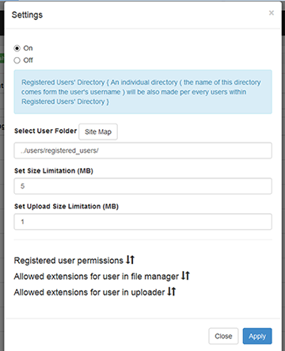
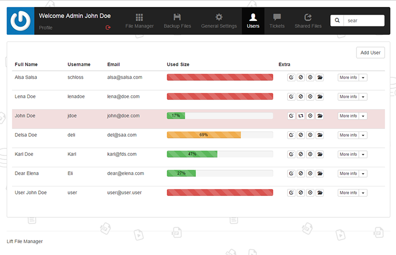

“Lift File Manager ” Documentation by “liberodark and Codstack Team” v3.3.0
“Lift File Manager ” V3.3.0
Created: 07/15/2013
Updated: 02/26/2015
By: liberodark and Codstack Team
Contact: Github Issues
Thank you for using Lift File Manager. If you have any questions that are beyond the scope of this help file, please feel free to email via our user page contact form here.
You can also get supported with our support system. Thanks so much!
Table of Contents
- How to install
- How it works
File Manager
Backup Files
General Settings
Add User
Users
Tickets
Profile
Shared Files
- Multi Language
- Credits
A) How to install TOP
( a ) If you have NOT purchased the previous version just do as the following:
( b ) If you own the previous version of this product please follow the steps below to easily update to the new version:
There are just 3 simple steps you need to do before enjoying the new version:
- First of all DON'T forget to make a backup of your database.
- Now you should upload the content of the file that you have just downloaded and let them be replaced with their previous files except the documentation folder, to your server by your ftp. You don't also need to upload the filemanager_config.php file and filemanager_install directory to your server because you have done this before. You'll need to change it a bit later. But you should delete the filemanager_admin directory.
- Now you should match the content of the new filemanager_config.php file with your previous config file.

How to change the root directory
If you intend to change your root directory you are needed to do as bellow:
- You shoud open filemanager_config.php file on your server.
- Then you should enter your new path for ROOT_DIR_PATH variable in line 13 and it's done.
B) How it works TOP
Now let’s see how this product really works and cover its different sections:
File Manager ^
This is the main section in which you are able to manage your server files and folders.
These are easy to work with so we just review them. As you can see in this section there are different parts here:
- Sort by: You can view your files & folders sorted by date or name.
- New Folder: You can add a new folder in the current folder & choose a name for it.
NOTE: Please be careful and don’t use duplicate names.
- Copy: Select your files or folders and click on the button Copy, choose your target directory and click on the button Copy.
- Move: Select your files or folders and click on the button Move, choose your target directory and click on the button Move.
- Remove: Select your file or folder and click on the button Remove and confirm the modal question.
- Zip: Select your files and folders and click on the button Zip, then write a name for your zip file in the opened window.
- Upload: Click on the button Upload, select your files or folders from your device and upload them easily.
- Download: Select your files or folders to and click on the button Download.
- Share: You can share files both via email and online in Lift area. Select your files and folders and click on the button Share, then fill the needed inputs.
- Backup: Select your files and folders and click on the button Backup, then write a name for your backup.
You can view your backups in the Backup Files section.
- Site Map: This is a clickable tree structure of your server files and folders.
You can easliy navigate to wherever you want to go on your server folders.
- Used Size: If you have logged in as a User, there is another part named Used Size in which you can view the user file limitation as a user. If you are a public user you can not veiw this part.
NOTE: All of these functionalities are accessible for any files and folders individually at their right sides.
You can select your file or folder and click on the blue icon at their right side and perform any of tasks explained above for each of your server’s files or folders.

Backup Files ^
In this section if you have made some backups before you can view, delete or download them here.
NOTE: In this version if you give your users the ability to make backups, you can view these backups made by your users but they themselves can not view these backups. Also the name of the backup files made by users is started with their usernames.
General Settings ^
In this section there are two columns in which you can determine which extensions are going to be shown on File Manager and Uploader.
NOTE: Uploader contains the extensions that you want to be accessible when uploading files to your server. Here you can also set which extensions shall be shown on File Manager.
You need to just write the extension and click on Add button to add a new extension and click on Remove button to remove an extension.
There are also some settings for Ticket System, File Sharing, User Registeration and Upload Notification's status:
- Ticket: If it is set to Off, users won't have access to Ticket System and can not send tickets to the admin ( the same happens to the admin ).
- Share via Email: If it is set to Off, users can't Share files via email
- Share Online: If it is set to Off, users can't Share files in Lift.
- Download Link: If it is set to On, the system will also provide you with a
Download URL of your file which can be used outside of Lift.
- User Registration : If it is set to On, a link will be appeared on the login page by which users can register in the Lift File Manager online. As it is set to On, a modal will be appeared in which you can set User Registeration Settings
- Admin Notification: If it is set to On, an email ( containing the information like; what file is uploaded, which user has uploaded the related file, in which directory the file is uploaded and the date of the upload ) will be sent to the admin when users upload files to the system.
- User Notification: If it is set to On, an email ( containing the information like; what file is uploaded, which user has uploaded the related file, in which directory the file is uploaded and the date of the upload ) will be sent to the the user himsef when the user upload files to the system.
User Registeration Settings
- In related modal, firstly you should define a general folder ( Registered Users' Directory ) in which all Registered Users will be placed. So in Select User Folder input define that folder. You can click on Site Map button next to the mentioned input and easily select a folder. By doing so when a user register online, an invidual directory will be made in this Registered Users' Directory. The name of each user directory automatically comes from the user's username.
- Next you should determine the Set Size Limitation and Set Upload Size Limitation for the Registered Users.
- Finilly you should set and customize Registered user permissions, Allowed extensions for user in file manager and Allowed extensions for user in uploader depending on your project policy
- Later under the Users section you can also change these settings.

Add User ^
In this section there are three columns;
Account Setting,
Allowed extensions for user in file manager &
Allowed extensions for user in uploader in a way that in each of these parts you can add new users and set your users options.
Let's get familiar with them:
Account Setting:
Well fill its different inputs like First Name, Last Name, Username and etc.
Ok, let's check its most important parts out:
* Send username / password for user via email: If you check it, after you add your new user an email containing the account info will be sent to your user.
* Select User Folder: You will also see this part by which you can specify your user's home directory to which the new user can have access. You can also assign multiple folders to users by clicking on Add Extra Folder button.
* Set Size Limitation (MB): You can define the amount of the files that user can upload totally to server.
* Set Upload Size Limitation (MB): You can define the amount of the upload size that user can upload to server per every file.
* Deny Folders Or Files With Name: You can select which files or folders can not be accessible by the user. You only need to click on the folder or file name.
* Set User Permissions: This is the nicest part in which you can give the user three types of general permissions. If you set it as Public the user can only see the server files / folders and download them. If you set it as Full the user can have a full access to all of the features of File Manager & Backup System just like an admin and can edit his own profile too. However a full permission does not lead the user to have access to General Settings, Add User & Users menus. If you click on Customization you can customize the permissions for the user :)
Allowed extensions for user in file manager:
In this column you can define which extentions your user is able to see in File Manager.Allowed extensions for user in uploader:
In this column you can define which extentions your user is able to upload to server.
Users ^
In this section you can view / edit / manage the registered users or users that you have manually added. You can block or unblock them temporarily or even remove them permanently. You fully control them here. It's easy to work with. Just try the demo.
There will be also shown 10 users in every pages.
Let's review its different parts:
- Edit: Here all of the features and facilities described in Add User section will be granted to you as an admin.
- Block / Unblock: You may want to block / unblock a user. It's ok just click on it.
- Remove: If you want to remove a user you can click on it.
- User Folder: You can see the home directory of the user.
- User profile: You can view some basic info of user like username, email & etc.
- User Permissions: Click on the button User Permission to see the type of the permission the user is attached to.
- Allow Extensions: You can check which types of files the user is able to see in File Manager
- Allow Uploader: You can check which types of files the user is able to upload to server.
- Deny Folders/Files: You can see which files or folders are forbidden for the user to be seen.

Tickets ^
In this section if the admin has set Tickets On, users can send tickets to the admin and admin can easily view and manage the exchanged tickets.
Edit Profile ^
You can edit or change your account information like username or password.
Shared Files ^
All the files which are shared online can be seen in this part.
C) Multi Language TOP
How to add languages in language module
You can add unlimited language files in the following path on your server:
..\filemanager_assets\lng
- There are three sample php files namely French, German and English in the above mentioned path.
- Copy and paste one the above files in the same directory then rename it to your own favorite language name.
- Then open the renamed file in a text file editor like notepad++ and translate its content to your language.
Don't forget to
Set these lines in each of your language files
Ok open each of them you want by a simple text editor like Notepad++ (Recommended) or whaterver and edit these important lines.
Choose your language charset then specify whether it is a Right to Left language or Vice Versa:
$language["charset"] = "utf-8"; // Select your language's charset unicode
$language["direction"] = "ltr"; // This should be set to "rtl" or "ltr"
( if your language is a Right to Left language replace "ltr" with "rtl" and vice versa )
D) Sources and Credits TOP
We've used the following.
Thank you so much for purchasing this item. We'd be glad to support you if you have any questions or issues related to this item.
Codstack Team
Go To Table of Contents